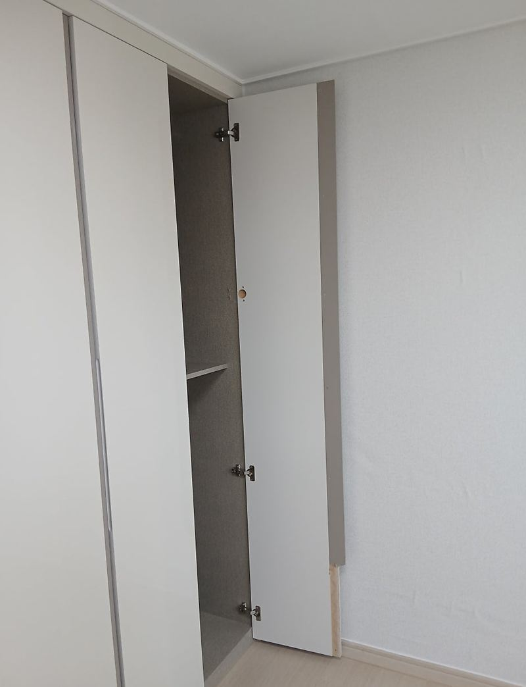
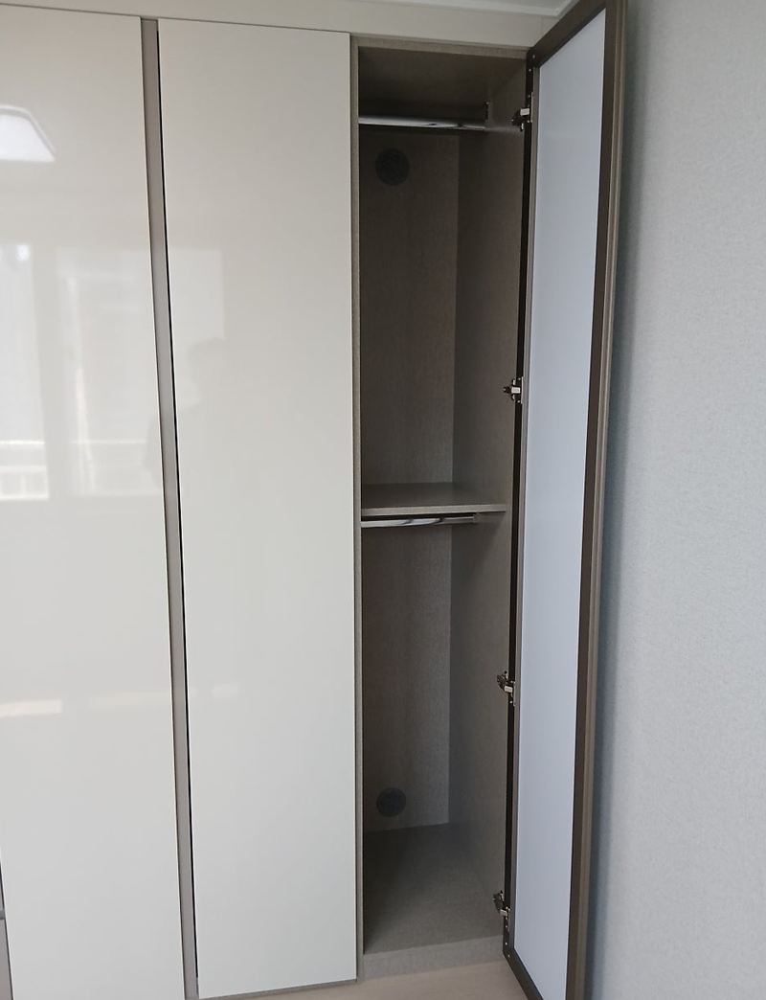
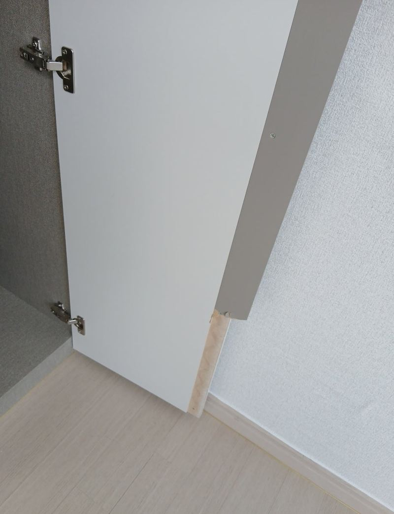
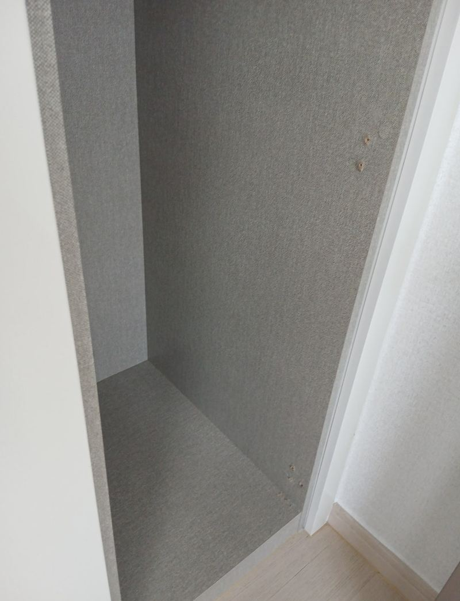
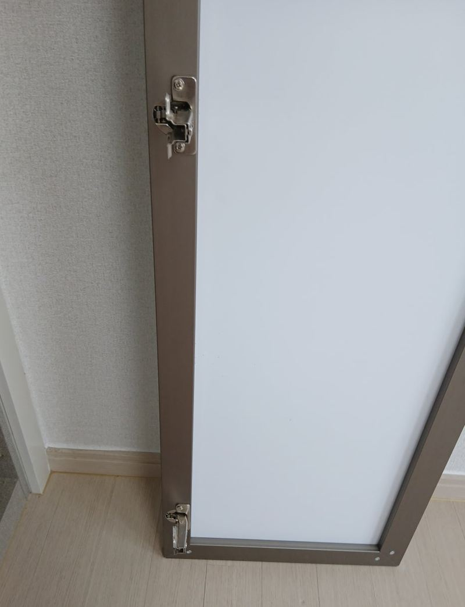
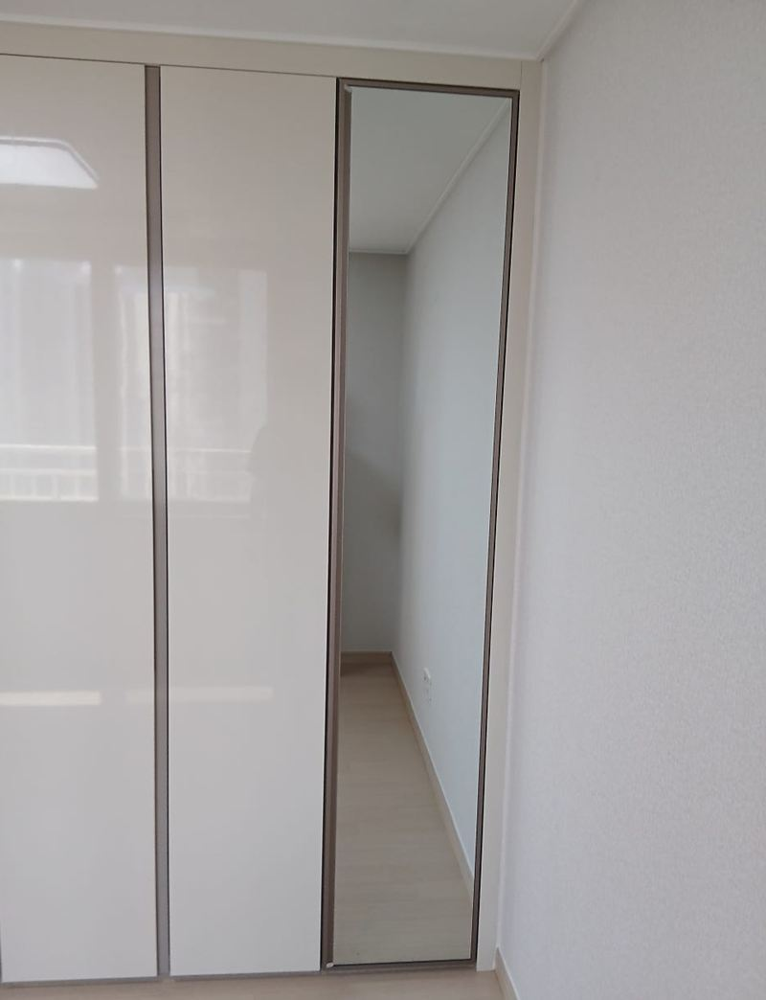

시흥 붙박이장 거울도어 설치 방법과 비용
← 밀어서 전후 비교 →
"수납장 문 하나를 거울문으로 바꾸고 싶어요. 입주가 얼마 안 남아서 다른 인테리어 일정이랑 안 겹치게 해 주세요." 시흥 배곧동 아파트 입주 준비 중이던 고객분이었어요. 따로 전신거울을 세울 자리가 마땅치 않아, 붙박이장 문을 거울로 쓰고 싶어 하셨어요. 문 크기를 실측해 거울도어를 맞춤 제작한 뒤, 기존 문을 떼고 경첩을 옮겨 달아 수평을 맞췄어요.
| 현장 | 시흥 배곧동 아파트, 입주 전 붙박이장 |
|---|---|
| 요청 | 붙박이장 문 한 짝을 거울문으로, 인테리어 일정에 맞춰 |
| 한 일 | 실측 → 거울도어 맞춤 제작 → 기존 문 탈착 → 거울도어에 경첩 장착 → 문틀 수평 조정·고정 → 여닫이 확인 |
| 일정 | 실측 후 제작을 거쳐 설치일을 따로 잡음 |
거울문으로 바꾸면 좋은 점
- 공간이 넓어 보여요거울이 빛을 되비춰 좁은 복도나 현관이 트여 보여요.
- 전신거울이 필요 없어요문이 거울 역할을 해 바닥에 세울 거울 자리가 필요 없어요.
- 밝아져요창이 먼 현관 쪽도 조명을 반사해 한결 환해요.
- 마감을 고를 수 있어요프레임 유무, 블랙·샴페인골드 프레임 등 집 분위기에 맞출 수 있어요.


거울도어 다는 순서
실측과 제작
문 높이와 폭, 경첩 위치를 재서 거울도어를 맞춤 제작했어요. 거울문은 줄여 쓰기 어려워 처음 치수가 중요해요.
기존 문 떼기
원래 달려 있던 흰 문을 경첩째 분리했어요.


경첩 장착
제작한 거울도어 뒷면에 경첩을 달았어요. 거울은 일반 문보다 무거워 경첩 상태가 오래 쓰는 데 중요해요.

수평 조정과 확인
문을 걸고 옆 문과 위아래 선이 맞도록 수평을 잡은 뒤, 여러 번 열고 닫아 걸리는 데가 없는지 봤어요.

설치 전 꼭 확인하는 것
| 확인할 것 | 이유 |
|---|---|
| 문틀·옆판 튼튼함 | 거울문은 무거워 약한 판이면 처져요 |
| 경첩·손잡이·댐퍼 | 무게에 맞는 부속으로 바꿀지 정해요 |
| 강화유리 여부 | 깨질 때 다칠 위험을 줄여요 |
| 주변 간섭 | 열 때 조명, 벽, 다른 가구에 닿지 않는지 봐요 |
고객분은 "일정에 맞춰 빨리 해 줘서 고마웠고, 달고 보니 생각보다 훨씬 예쁘고 공간도 넓어 보인다, 아침 준비할 때 편하다"고 하셨어요.
거울도어가 잘 어울리는 자리
- 드레스룸옷을 입고 바로 비춰 볼 수 있어 준비 동선이 짧아져요.
- 현관나가기 전 옷매무새를 보고, 좁은 현관이 넓어 보이는 효과도 있어요.
- 복도창이 없는 복도도 조명을 되비춰 한결 밝아져요.
- 침실·아이 방전신거울을 따로 둘 자리가 없는 방에 실용적이에요. 아이 방이면 깨짐 방지 처리를 함께 봐요.
붙박이장 거울도어 질문
슬라이딩 붙박이장도 거울문이 되나요?
네, 슬라이딩 문짝을 거울로 바꾸기도 해요. 레일이 무게를 버티는지 먼저 봐요.
문 전체를 거울로 해야 하나요?
한 짝만 바꿔도 충분히 효과가 있어요. 이 현장도 한 짝만 바꿨어요.
거울문이 처지지 않을까요?
무게에 맞는 경첩을 쓰고 가끔 조임 상태를 보면 처짐을 줄일 수 있어요.
거울에 손자국이 잘 남지 않나요?
마른 극세사 천으로 닦으면 깨끗해요. 세제를 바로 뿌리면 가장자리로 스며들 수 있어 천에 묻혀 닦아 주세요.
신발장 문도 바꿀 수 있나요?
현관 신발장 문을 거울로 바꾸는 경우도 많아요.
아이 방에도 괜찮을까요?
깨짐 방지 필름이나 강화유리를 쓰면 안전에 도움이 돼요.
입주 전 일정이 빠듯해요.
실측과 제작 기간이 필요해서, 날짜가 정해졌다면 일찍 연락 주시는 게 좋아요.
거울 두께는 어떻게 정하나요?
문 크기와 경첩이 버티는 무게를 보고 정해요. 크고 두꺼울수록 무거워져요.
프레임 없는 거울문도 되나요?
가능해요. 테두리 없이 깔끔하지만 모서리 보호에 더 신경 써야 해요.
기존 문은 버려 주나요?
원하시면 떼어 낸 문을 정리해 가지고 나가요.
다른 슬라이딩·붙박이장 현장
붙박이장 정면 사진과 바꾸고 싶은 문을 알려주세요.
전화 상담 010-4517-9872